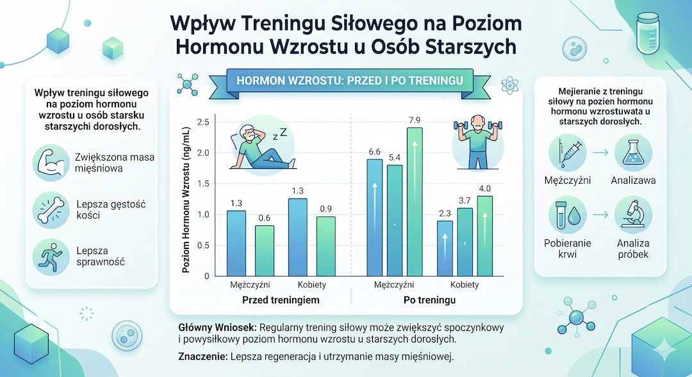
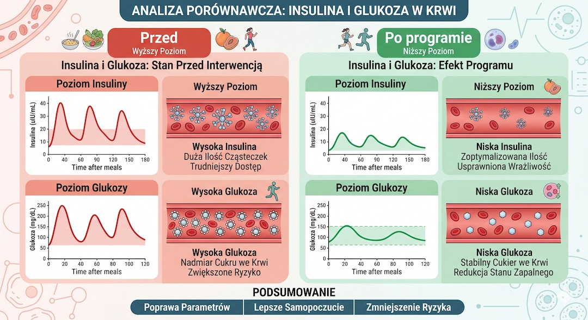
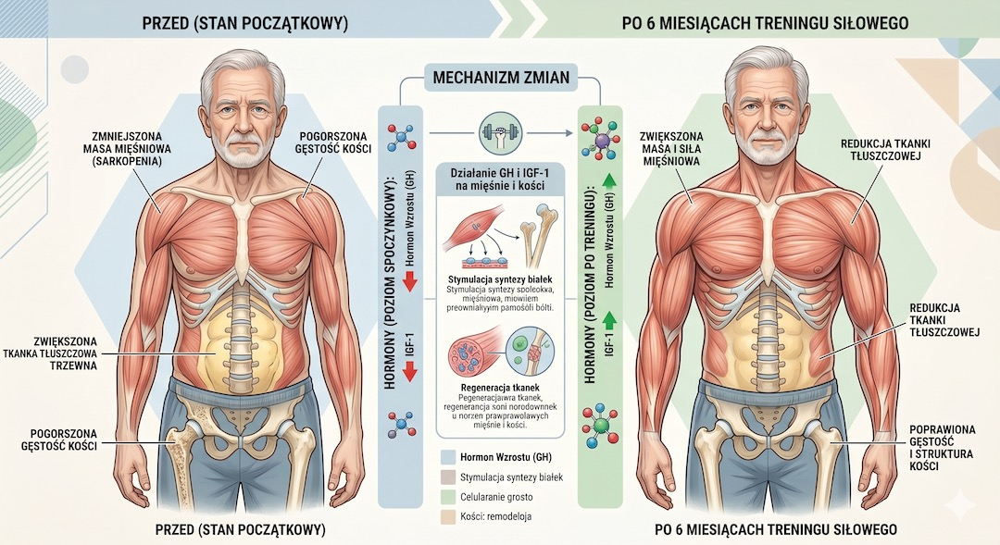
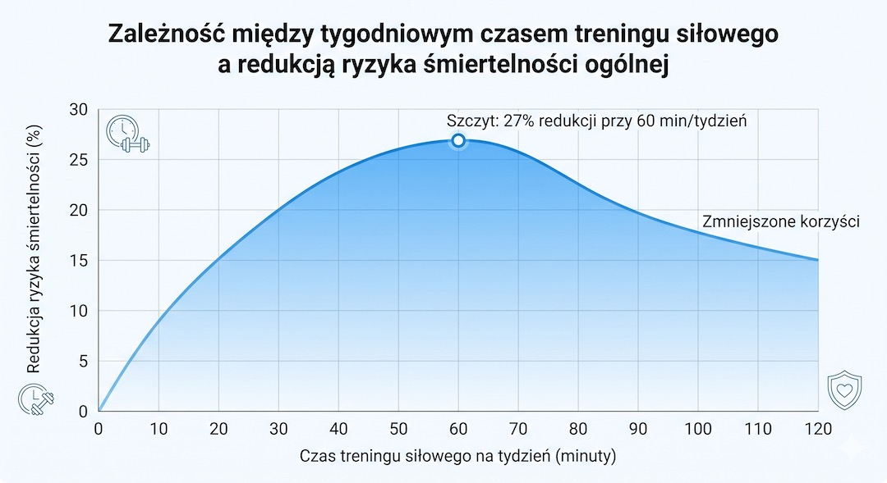
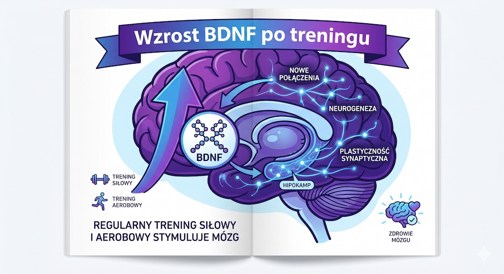
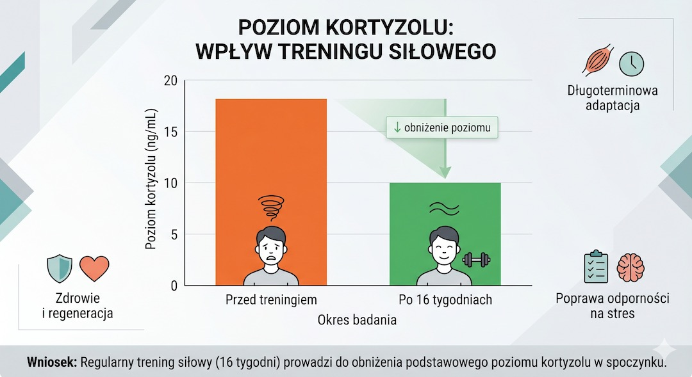
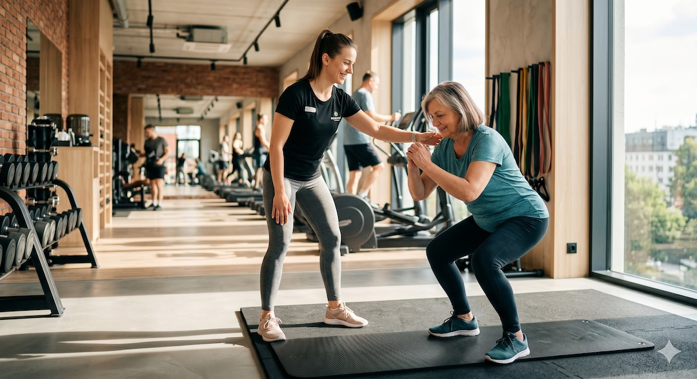

Po 50. roku życia zmiany hormonalne i metaboliczne są nieuniknione, ale ich tempo można ograniczać konkretnym bodźcem. Trening siłowy poprawia insulinowrażliwość, pomaga utrzymać mięśnie i wspiera odpowiedź hormonów anabolicznych na wysiłek. Najwięcej daje nie heroiczny plan, tylko 2-3 rozsądne sesje tygodniowo z progresją dopasowaną do regeneracji.
Szybka odpowiedź
Trening siłowy po 50-tce nie jest magicznym eliksirem, ale jednym z najlepiej udokumentowanych sposobów ochrony mięśni, kości, metabolizmu i samodzielności. Największy sens ma regularność: 2-3 sesje tygodniowo, spokojna progresja i odpoczynek. Jeśli masz nadciśnienie, cukrzycę lub choroby serca, zacznij od konsultacji i lżejszych wariantów.
Kluczowe wnioski
Trening oporowy wspiera siłę i samodzielność, ale wymaga progresji dopasowanej do doświadczenia i zdrowia.
- Przejściowe zmiany testosteronu lub hormonu wzrostu po sesji nie są miarą „odmłodzenia” ani skuteczności planu.
- Regularny trening oporowy może poprawiać siłę, sprawność, kontrolę glikemii i wrażliwość insulinową.
- Badania obserwacyjne łączą ćwiczenia wzmacniające z niższą umieralnością, lecz nie dowodzą magicznej dawki 60 minut.
- Ruch wspiera zdrowie mózgu, ale zmienna odpowiedź BDNF nie gwarantuje ochrony przed demencją.
Dlaczego hormony mają znaczenie po 50-tce?
Po 50-tce hormony anaboliczne spadają, więc wolniej budujemy mięśnie i trudniej utrzymać energię. Dobra wiadomość jest taka, że trening siłowy potrafi ten trend wyraźnie spowolnić i poprawić reakcję organizmu na wysiłek.
Trening może przejściowo zmieniać stężenia hormonów po sesji, lecz taki pik nie dowodzi trwałego wzrostu testosteronu lub GH i nie wyjaśnia całej adaptacji mięśni. Postęp wynika głównie z regularnego bodźca, odpowiedniej objętości, białka, energii i regeneracji. Zobacz też plan powrotu do formy po 50-tce.
- Testosteron — wspiera wzrost masy mięśniowej i gęstość kości
- Hormon wzrostu (GH) — stymuluje regenerację tkanek i syntezę białek
- DHEA — prekursor hormonów; jego suplementacja nie jest rutynowym sposobem na „energię”
- Insulinopodobny czynnik wzrostu (IGF-I) — mediator anabolicznych efektów GH

Jak trening siłowy wpływa na metabolizm i insulinowrażliwość?
Spadek insulinowrażliwości po 50-tce zwiększa ryzyko cukrzycy typu 2. Trening oporowy poprawia pracę mięśni jako magazynu glukozy, obniża insulinę na czczo i wspiera stabilniejszy metabolizm, szczególnie gdy jest wykonywany regularnie.
Badanie z 2006 roku przeprowadzone na starszych Hispanosach z cukrzycą typu 2 pokazało, że 16 tygodni intensywnego treningu siłowego zwiększyło siłę i jakość mięśni, a jednocześnie poprawiło profil metaboliczny: wzrósł poziom adiponektyny (hormonu poprawiającego insulinowrażliwość), a spadły wolne kwasy tłuszczowe i białko C-reaktywne (marker stanu zapalnego). To dowód, że mięśnie nie są tylko narządem ruchu — to aktywna tkan metaboliczna, która reguluje gospodarkę hormonalną. Sprawdź także jak dieta wspiera mięśnie po 50-tce.
- Wzrost masy mięśniowej poprawia wychwyt glukozy z krwi
- Obniżenie poziomu wolnych kwasów tłuszczowych (FFA) wspiera metabolizm lipidów
- Redukcja białka C-reaktywnego (CRP) zmniejsza przewlekły stan zapalny
- Wzrost adiponektyny chroni przed insulinoopornością

Sarkopenia i utrata masy mięśniowej — jak ją zatrzymać?
Sarkopenia to utrata mięśni i siły, która przyspiesza z wiekiem. Regularny trening oporowy pomaga odbudować sprawność, poprawia równowagę i zmniejsza ryzyko upadków, nawet u osób starszych rozpoczynających ćwiczenia późno.
Meta-analiza z 2021 roku potwierdziła, że trening oporowy — zwłaszcza przy niskim i umiarkowanym obciążeniu — znacząco poprawia masę mięśniową mierzoną za pomocą MRI, DEXA, BIA i CT oraz poprawia wskaźniki sprawności fizycznej, takie jak siła chwytu, prędkość chodu i test wstań-idź-usiądź (TUG). Badania obejmujące osoby powyżej 80. roku życia pokazują, że nawet w zaawansowanym wieku można odbudować siłę i funkcjonalność mięśni. Kluczowe jest rozpoczęcie regularnego treningu oporowego jak najwcześniej.
- Tempo utraty mięśni jest indywidualne i zależy między innymi od chorób, aktywności, diety oraz wieku.
- Trening oporowy zwiększa masę mięśni szkieletowych (ASMI) i poprawia jakość włókien mięśniowych
- Siła może poprawiać się w pierwszych tygodniach dzięki nauce ruchu i adaptacji nerwowej; termin nie jest gwarantowany.
- Efekty widoczne nawet u osób po 80. roku życia, choć wolniej niż u młodszych

Ryzyko zgonu i długowieczność — liczby nie kłamią?
Trening siłowy nie jest tylko dla sylwetki. Badania pokazują, że regularna praca z obciążeniem wiąże się z niższym ryzykiem przedwczesnego zgonu, a najlepsze korzyści zdrowotne pojawiają się już przy umiarkowanej tygodniowej objętości.
W badaniach obserwacyjnych osoby wykonujące ćwiczenia wzmacniające miały niższą umieralność, ale różniły się także zdrowiem i innymi zachowaniami. Nie wolno porównywać takiej zależności z działaniem leku ani obiecywać konkretnej redukcji ryzyka jednej osobie. Najpewniejsza korzyść to zachowanie siły i sprawności; więcej o zdrowiu w długim terminie.
- Niższe ryzyko w badaniach populacyjnych jest związkiem statystycznym, nie gwarancją.
- Ćwiczenia oporowe uzupełniają, a nie zastępują aktywność aerobową.
- Dawka zależy od intensywności i objętości; nie ma jednej magicznej liczby minut.
- Więcej nie zawsze znaczy lepiej, ale wniosek nie oznacza zakazu przekroczenia 60 minut tygodniowo.

Trening siłowy a zdrowie mózgu i BDNF?
BDNF wspiera pamięć, neuroplastyczność i ochronę mózgu. U osób starszych jego poziom może rosnąć po regularnym treningu siłowym, co łączy aktywność mięśni z lepszym funkcjonowaniem układu nerwowego i sprawnością poznawczą.
Badanie z 2022 roku na zdrowych seniorach potwierdziło, że 11 tygodni treningu łączonego zwiększyło poziom BDNF niezależnie od częstotliwości treningów. Mechanizmy obejmują lepszą wrażliwość insulinową, redukcję stanów zapalnych i poprawę przepływu krwi w mózgu. To oznacza, że mięśnie generują sygnały biochemiczne wspierające zdrowie mózgu — efekt określany jako oś mięśnie-mózg. Trening siłowy działa więc nie tylko na ciało, ale i na umysł, co jest szczególnie istotne w kontekście zdrowia kognitywnego po 50-tce.
- Wzrost poziomu BDNF poprawia neuroplastyczność i chroni neurony przed zanikiem
- Trening siłowy i kombinowany skuteczniejszy niż sam aerobik w podnoszeniu BDNF
- Poprawa insulinowrażliwości i redukcja stanów zapalnych wspierają zdrowie mózgu
- Regularne ćwiczenia mogą opóźniać procesy neurodegeneracyjne typowe dla starzenia

Kortyzol i regulacja stresu po 50-tce?
Przewlekle podwyższony kortyzol pogarsza regenerację i nasila katabolizm mięśni. Dobrze zaplanowany trening siłowy może stabilizować reakcję stresową, wspierać odporność i poprawiać samopoczucie, jeśli zachowujemy rytm wysiłku oraz odpoczynku.
Kortyzol zmienia się w ciągu doby i reaguje na sen, chorobę, energię z diety, stres oraz sam wysiłek. Pojedynczy wynik lub stosunek kortyzol/DHEA nie jest domowym miernikiem „równowagi hormonalnej”. Dobrze dobrany ruch może poprawiać samopoczucie i sen, lecz nie działa jak lek stabilizujący oś HPA.
- Trening nie musi obniżać kortyzolu; odpowiedź zależy od pory, dawki i regeneracji.
- Stosunek kortyzol/DHEA nie jest samodzielnym testem przewlekłego stresu.
- Zbyt wysoki poziom kortyzolu prowadzi do katabolizmu mięśni i osłabienia odporności
- Regularność pomaga tolerować wysiłek, ale nie gwarantuje „równowagi hormonalnej”.

Jak zacząć trening siłowy po 50-tce bezpiecznie?
Bezpieczny start po 50-tce opiera się na technice, spokojnym progresie i regeneracji. Wystarczą dwie krótkie sesje tygodniowo, by budować siłę bez przeciążenia stawów, szczególnie gdy plan jest dopasowany do stanu zdrowia.
Zacznij od dwóch sesji tygodniowo i obciążeń pozwalających zostawić kilka powtórzeń w zapasie. Dodaj najpierw powtórzenie lub popraw zakres ruchu; ciężar zwiększ dopiero, gdy wszystkie serie są technicznie stabilne i regenerujesz się przed kolejną sesją. Sztywny wzrost 5–10% co 2–3 tygodnie nie pasuje do każdego ćwiczenia. Szczegóły: jak zacząć ćwiczenia po 50-tce.
- Rozpocznij od konsultacji lekarskiej i oceny sprawności fizycznej
- Ucz się poprawnej techniki z trenerem — to podstawa bezpieczeństwa
- 2 treningi w tygodniu po 30-40 minut to optymalny start dla większości osób
- Progresja dopiero po stabilnych seriach: powtórzenie, zakres albo najmniejszy dostępny ciężar.
- Dzień przerwy między treningami wspiera regenerację po 50-tce
- Rozgrzewka i rozciąganie chronią stawy i poprawiają elastyczność

Najczęściej zadawane pytania?
Odpowiedzi oddzielają dobrze udokumentowane efekty siłowe i metaboliczne od obietnic „hormonalnego odmładzania”.
Czy trening siłowy po 50-tce jest bezpieczny?
Trening siłowy jest zwykle bezpieczny, gdy zaczynasz stopniowo, dbasz o technikę i uwzględniasz regenerację. Ból w klatce, omdlenie, duszność przy małym wysiłku lub niekontrolowane ciśnienie wymagają konsultacji przed treningiem.
Jak długo trzeba trenować, żeby zobaczyć efekty hormonalne?
Przejściowy wzrost niektórych hormonów po sesji nie jest celem ani wiarygodnym wskaźnikiem postępu. Efekty oceniaj po sile, sprawności, glikemii, samopoczuciu i tolerancji planu w kolejnych tygodniach, a zaburzenia hormonalne diagnozuj na podstawie objawów i badań lekarskich.
Ile razy w tygodniu powinnam trenować po 50-tce?
Dla większości początkujących praktycznym startem są dwie sesje całego ciała tygodniowo. Trzecią dodaj dopiero wtedy, gdy technika, sen i regeneracja są dobre. Częstotliwość zależy od objętości, intensywności, chorób i wcześniejszej aktywności.
Czy trening siłowy pomaga w profilaktyce cukrzycy typu 2?
Może poprawiać wrażliwość insulinową i kontrolę glikemii, zwłaszcza jako część planu obejmującego ruch aerobowy, dietę, sen i masę ciała. Nie gwarantuje uniknięcia cukrzycy i nie zastępuje leków; przy terapii grożącej hipoglikemią ustal zasady pomiaru z lekarzem.
Czy trening siłowy chroni przed demencją?
Aktywność fizyczna jest elementem zdrowego stylu życia, ale sam trening siłowy nie gwarantuje ochrony przed demencją. Badania nad funkcjami poznawczymi i BDNF są zróżnicowane. Nowe problemy z pamięcią wymagają oceny, a nie zwiększania ciężaru na własną rękę.
Jaka intensywność treningu jest optymalna dla osób starszych?
Najczęściej sprawdza się umiarkowana intensywność, którą zwiększasz stopniowo wraz z poprawą techniki i siły. Celem jest regularny progres bez bólu i przeciążeń, a nie jednorazowe, bardzo ciężkie sesje.
Jeśli łączysz trening z suplementacją, sprawdź dawkę 3-5 g kreatyny po 50-tce i zasady bezpieczeństwa.
Obwód pasa, tłuszcz trzewny, kortyzol i nawyki wspierające metabolizm omawiamy szerzej w Centrum Metabolizmu i Brzucha po 50-tce.
Trening oporowy wspiera nie tylko mięśnie. Zobacz również, jak trening siłowy wpływa na serce po 50-tce.
Źródła?
Źródła dotyczą wpływu treningu oporowego na siłę, sprawność, skład ciała i ryzyko sarkopenii u dorosłych oraz osób starszych. Nie uzasadniają dosłownego traktowania treningu jako „eliksiru młodości”.
- Kraemer WJ et al., Effects of progressive resistance training on growth hormone and testosterone, Experimental Gerontology, 1989
- Momma H et al., Resistance Training and Mortality Risk: A Systematic Review and Meta-Analysis, American Journal of Preventive Medicine, 2022
- Castaneda C et al., Strength training improves muscle quality and insulin sensitivity in Hispanic older adults with type 2 diabetes, International Journal of Medical Sciences, 2006
- Liu Y et al., Resistance training enhances metabolic and muscular health in middle-aged and older adults with type 2 diabetes, Diabetes Research and Clinical Practice, 2025
- Chen X et al., The Impact of Different Types of Exercise Training on BDNF in Older Adults, Journal of Sport and Health Science, 2019
- Li Z et al., Exercise training alters resting brain-derived neurotrophic factor in older adults: systematic review and meta-analysis, Aging Clinical and Experimental Research, 2025
- Negaresh R et al., Effects of resistance training in healthy older people with sarcopenia: a systematic review and meta-analysis, Journal of Sports Medicine and Physical Fitness, 2021
Uwaga: Artykuł ma charakter informacyjny i edukacyjny. Nie zastępuje konsultacji lekarskiej, diagnozy ani leczenia.